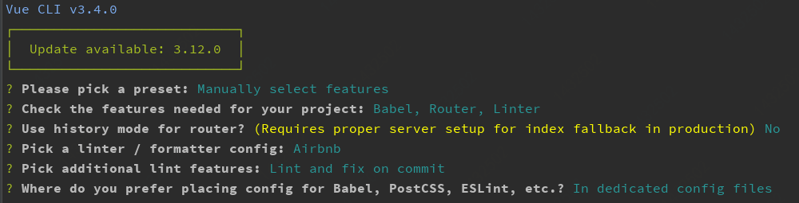
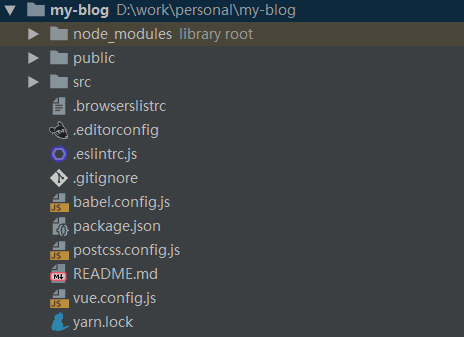

首发于微信公众号《前端成长记》，写于 2019.10.12
有句老话说的好，好记性不如烂笔头。人生中，总有那么些东西你愿去执笔写下。
本文旨在把整个搭建的过程和遇到的问题及解决方案记录下来，希望能够给你带来些许帮助。
本文涉及的主要技术：
我的博客的折腾史分成下面三个阶段：
基于 hexo 搭建静态博客，结合 Github Pages 提供域名和服务器资源
自行采购服务器和域名，进行页面和接口的开发及部署，搭建动态博客
基于 Github Pages 和 Github Api 搭建动态博客
第1种方式，文章内容采用 Markdown 编写，静态页面通过 hexo 生成，部署到 Github Pages 上。缺点很明显，每次有新内容，都需要重新编译部署。
第2种方式，灵活度极高，可以按需开发。缺点也很明显，开发和维护工作量大，同时还需要服务器和域名成本。
第3种方式，采用 ISSUE 来记录文章，天然支持 Markdown ,接口调用 Github Api，部署到 Github Pages 上。除了一次性开发外没有任何额外成本。
显而易见，本博客这次改版就是基于第3种方式来实现的，接下来我们从0开始一步步做。
由于是个人博客，技术选型可以大胆尝试。
笔者选择了 vue-cli 进行项目结构的初始化，同时采用 vue3.x 的语法 Composition-Api 进行页面开发。采用 Github API v4 ,也就是 GraphQL 语法进行 API 调用。
前往 Node.js官网 下载，这里推荐下载 LTS 稳定版。下载后按照步骤进行安装操作即可。
Window 下记得选上
Add To Path，保证全局命令可用
执行以下代码全局安装即可。
npm install -g @vue/cli通过 vue-cli 来初始化项目，按照下面内容选择或自行按需选择。
vue create my-blog
完成初始化并安装依赖后，查看到的项目目录如下：

@vue/composition-api使用 Vue 3.0 语法必要依赖
npm install @vue/composition-api --savegraphql-request简单轻巧的的 graphQL 客户端。同样还有 Apollo, Relay 等可以进行选择。选择它的理由是：简单轻巧，以及基于 Promise。
npm install graphql-request --savegithub-markdown-css使用 Github 的风格渲染 Markdown，选择它的理由是原汁原味。
npm install github-markdown-css --save我的博客之前是使用的 fexo 风格主题，所以本次也是以此为UI依据进行开发。
项目整体分成几个页面：
import { GraphQLClient } from 'graphql-request';
import config from '../../config/config';
import Loading from '../components/loading/loading';
const endpoint = 'https://api.github.com/graphql';
const graphQLClient = new GraphQLClient(endpoint, {
headers: {
authorization: `bearer ${config.tokenA}${config.tokenB}`,
'X-Requested-With': 'XMLHttpRequest',
'Content-Type': 'application/x-www-form-urlencoded; charset=UTF-8',
},
});
const Http = (query = {}, variables = {}, alive = false) => new Promise((resolve, reject) => {
graphQLClient.request(query, variables).then((res) => {
if (!alive) {
Loading.hide();
}
resolve(res);
}).catch((error) => {
Loading.hide();
reject(error);
});
});
export default Http;我们可以看到配置了 headers ，这里是 Github Api 要求的鉴权。
这里有两个坑，只有在打包提交代码后才发现：
token 不能直接提交到 Github，否则再使用时会发现失效。这里我猜测是安全扫描机制，所以我上面将 token 分成两部分拼接绕过这个。
Content-Type 需要设置成 x-www-form-urlencoded ，否则会跨域请求失败。
接下来我们将修改 main.js 文件，将请求方法挂载到 Vue实例 上。
...
import Vue from 'vue';
import Http from './api/api';
Vue.prototype.$http = Http;
...主要将介绍 composition-api 和 graphqh 相关，其余部分请查阅 Vue文档
我们首先需要引入 composition-api ，修改 main.js 文件
...
import Vue from 'vue';
import VueCompositionApi from '@vue/composition-api';
Vue.use(VueCompositionApi);
...然后新建一个 Archives.vue 去承接页面内容。
首先的变动是生命周期的变动，使用 setup 函数代替了之前的 beforeCreate 和 created 钩子。值得注意的有两点：
Templates 一起使用时返回一个给 template 使用的数据对象。this 对象，需使用 context.root 获取到根实例对象。...
export default {
setup (props, context) {
// 通过context.root获取到根实例，找到之前挂载在Vue实例上的请求方法
context.root.$http(xxx)
}
}
...数据查询的语法参考 Github Api。
我这里是以 blog 仓库 的 issue 来作为文章的，所以我这里的查询语法大致意思：
按照 owner 和 name 去查仓库， owner 是 Github 账号，name 是仓库名称。
查询 issues 文章列表，按照创建时间倒序返回，first 表示每次返回多少条。after 表示从哪开始查。所以结合这个就很容易实现分页，代码如下：
...
// 引入，使用 reactive 创建响应式对象
import {
reactive,
} from '@vue/composition-api';
export default {
setup (props, context) {
const archives = reactive({
cursor: null
});
const query = `query {
repository(owner: "ChenJiaH", name: "blog") {
issues(orderBy: {field: CREATED_AT, direction: DESC}, labels: null, first: 10, after:${archives.cursor}) {
nodes {
title
createdAt
number
comments(first: null) {
totalCount
}
}
pageInfo {
endCursor
hasNextPage
}
}
}
}`;
// 通过context.root获取到根实例，找到之前挂载在Vue实例上的请求方法
context.root.$http(query).then(res => {
const { nodes, pageInfo } = res.repository.issues
archives.cursor = pageInfo.endCursor // 最后一条的标识
})
}
}
...这里我没有找到 issues 中返回全部的 labels 数据，所以只能先查全部 label ，再默认查询第一项 label ，语法如下：
...
const getData = () => {
const query = `query {
repository(owner: "ChenJiaH", name: "blog") {
issues(filterBy: {labels: ${archives.label}}, orderBy: {field: CREATED_AT, direction: DESC}, labels: null, first: 10, after: ${archives.cursor}) {
nodes {
title
createdAt
number
comments(first: null) {
totalCount
}
}
pageInfo {
endCursor
hasNextPage
}
totalCount
}
}
}`;
context.root.$http(query).then((res) => {
...
});
};
const getLabels = () => {
context.root.$loading.show('努力为您查询');
const query = `query {
repository(owner: "ChenJiaH", name: "blog") {
labels(first: 100) {
nodes {
name
}
}
}
}`;
context.root.$http(query).then((res) => {
archives.loading = false;
archives.labels = res.repository.labels.nodes;
if (archives.labels.length) {
archives.label = archives.labels[0].name;
getData();
}
});
};
...文章详情分成两部分：文章详情查询和文章评论。
这里首先引入 github-markdown-css 的样式文件，然后给 markdown 的容器加上 markdown-body 的样式名，内部将会自动渲染成 github 风格的样式。
...
<template>
...
<div class="markdown-body">
<p class="cont" v-html="issue.bodyHTML"></p>
</div>
...
</template>
<script>
import {
reactive,
onMounted,
} from '@vue/composition-api';
import { isLightColor, formatTime } from '../utils/utils';
export default {
const { id } = context.root.$route.params; // 获取到issue id
const getData = () => {
context.root.$loading.show('努力为您查询');
const query = `query {
repository(owner: "ChenJiaH", name: "blog") {
issue(number: ${id}) {
title
bodyHTML
labels (first: 10) {
nodes {
name
color
}
}
}
}
}`;
context.root.$http(query).then((res) => {
const { title, bodyHTML, labels } = res.repository.issue;
issue.title = title;
issue.bodyHTML = bodyHTML;
issue.labels = labels.nodes;
});
};
};
</script>
<style lang="scss" scoped>
@import "~github-markdown-css";
</style>
...注意这里有个label颜色的获取
众所周知，Github Label 的字体颜色是根据背景色自动调节的，所以我这里封装了一个方法判断是否为亮色，来设置文字颜色。
// isLightColor
const isLightColor = (hex) => {
const rgb = [parseInt(`0x${hex.substr(0, 2)}`, 16), parseInt(`0x${hex.substr(2, 2)}`, 16), parseInt(`0x${hex.substr(4, 2)}`, 16)];
const darkness = 1 - (0.299 * rgb[0] + 0.587 * rgb[1] + 0.114 * rgb[2]) / 255;
return darkness < 0.5;
};这里我采用的是 utterances ，请按照步骤初始化项目，Blog Post 请选择 Specific issue number ，这样评论才会是基于该 issue 的，也就是当前文章的。然后在页面中按下面方式配置你的相关信息引入：
...
import {
reactive,
onMounted,
} from '@vue/composition-api';
export default {
setup(props, context) {
const { id } = context.root.$route.params; // issue id
const initComment = () => {
const utterances = document.createElement('script');
utterances.type = 'text/javascript';
utterances.async = true;
utterances.setAttribute('issue-number', id);
utterances.setAttribute('theme', 'github-light');
utterances.setAttribute('repo', 'ChenJiaH/blog');
utterances.crossorigin = 'anonymous';
utterances.src = 'https://utteranc.es/client.js';
// 找到对应容器插入，我这里用的是 comment
document.getElementById('comment').appendChild(utterances);
};
onMounted(() => {
initComment();
});
}
}
...这个方案的好处是：数据完全来自 Github Issue ，并且自带登录体系，非常方便。
刚好上面部分提到了 utterances ，顺势基于这个开发留言板，只需要把 Blog Post 更换成其他方式即可，我这里选择的是 issue-term ，自定义标题的单条 Issue 下留言。为了避免跟文章那里区分，所以我使用另外一个仓库来管理留言。实现代码如下：
...
import {
onMounted,
} from '@vue/composition-api';
export default {
setup(props, context) {
context.root.$loading.show('努力为您查询');
const initBoard = () => {
const utterances = document.createElement('script');
utterances.type = 'text/javascript';
utterances.async = true;
utterances.setAttribute('issue-term', '【留言板】');
utterances.setAttribute('label', ':speech_balloon:');
utterances.setAttribute('theme', 'github-light');
utterances.setAttribute('repo', 'ChenJiaH/chenjiah.github.io');
utterances.crossorigin = 'anonymous';
utterances.src = 'https://utteranc.es/client.js';
document.getElementById('board').appendChild(utterances);
utterances.onload = () => {
context.root.$loading.hide();
};
};
onMounted(() => {
initBoard();
});
},
};
...这里碰到一个坑，找了很久没有找到模糊搜索对应的查询语法。
这里感谢一下 simbawus ，解决了查询语法的问题。具体查询如下：
...
const query = `query {
search(query: "${search.value} repo:ChenJiaH/blog", type: ISSUE, first: 10, after: ${archives.cursor}) {
issueCount
pageInfo {
endCursor
hasNextPage
}
nodes {
... on Issue {
title
bodyText
number
}
}
}
}`;
...还好有 ... 拓展运算符，要不然 nodes 这里面的解析格式又不知道该怎么写了。
其他页面多数为静态页面，所以按照相关的语法文档开发即可，没有什么特别的难点。
另外我这也未使用 composition-api 的全部语法，只是根据项目需要进行了一个基本的尝试。
项目的提交采用 commitizen ，采用的理由是：提交格式规范化，可以快速生成变更日志等，后期可做成自动化。参考对应使用使用步骤使用即可。
项目的版本管理采用 Semantic Versioning 2.0.0
编写了一个 deploy.sh 脚本，并配置到 package.json 中。执行 npm run deploy 将自动打包并推送到 gh-pages 分支进行页面的更新。
// package.json
{
...
"scripts": {
"serve": "vue-cli-service serve",
"build": "vue-cli-service build",
"lint": "vue-cli-service lint",
"inspect": "vue-cli-service inspect",
"deploy": "sh build/deploy.sh",
"changelog": "conventional-changelog -p angular -i CHANGELOG.md -s -r 0 && git add CHANGELOG.md"
},
...
}#!/usr/bin/env sh
set -e
npm run build
cd dist
git init
git config user.name 'McChen'
git config user.email 'chenjiahao.xyz@gmail.com'
git add -A
git commit -m 'deploy'
git push -f git@github.com:ChenJiaH/blog.git master:gh-pages
cd -gh-pages 的使用需要先创建
用户名.github.io的仓库
至此，一个0成本的动态博客已经完全搭建好了。开发过程中还遇到了一些 eslint 相关的提示和报错，直接搜索基本可解决。
如有疑问或不对之处，欢迎留言。
（完）
本文为原创文章，可能会更新知识点及修正错误，因此转载请保留原出处，方便溯源，避免陈旧错误知识的误导，同时有更好的阅读体验
如果能给您带去些许帮助，欢迎 ⭐️star 或 ✏️ fork
(转载请注明出处：https://chenjiahao.xyz)